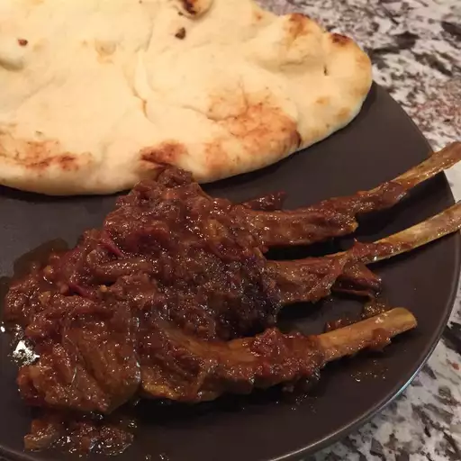

Lamb Chops

Description
This lamb chop dish has a delicious sweet and savory gravy made of caramelized onions.
Goes great with some naan or rice.
Ingredients
- ¼ cup oil
- 2 pounds lamb chops
- 3 pods green cardamom
- 1 pod black cardamom
- 2 bay leaves
- 1 cinnamon stick
- 1 teaspoon cumin seeds
- 6 large onions, thinly sliced
- 6 cloves garlic, minced
- 1 tablespoon minced fresh ginger root
- 2 teaspoons red chile powder
- ½ teaspoon ground turmeric
- salt to taste
- ¼ cup water
- 2 tomatoes, chopped
- 3 green chile peppers, halved and seeded
- 1 tablespoon chopped fresh cilantro, or to taste
Steps
- Heat oil in a large skillet over medium heat.
Brown lamb chops on all sides, about 5 minutes.
Remove and set aside.
- Stir in green cardamom, black cardamom, bay leaves, cinnamon stick, and cumin seeds until fragrant, about 1 minute.
Add onions, garlic, and ginger; cook until onion is golden brown, about 10 minutes.
Mix in chile powder, turmeric, and salt; stir-fry for 1 minute.
Add browned lamb, water, tomatoes, and chile peppers.
Simmer over low heat until lamb is tender and all water has evaporated and onions have disintegrated into a thick gravy, about 40 minutes.
Serve garnished with cilantro.